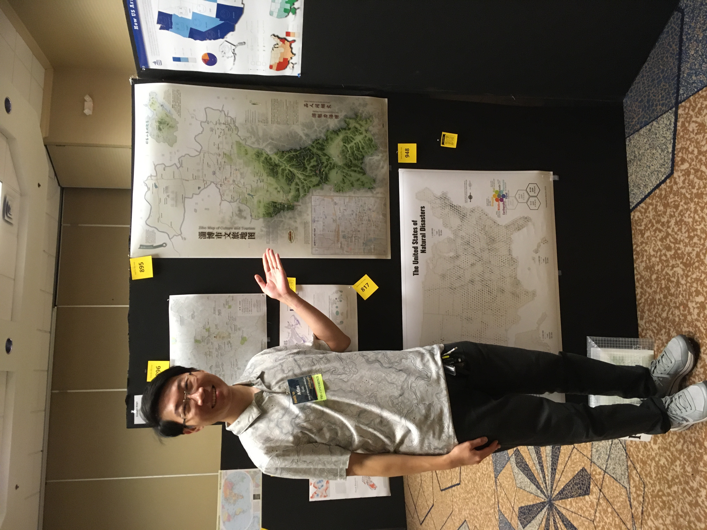
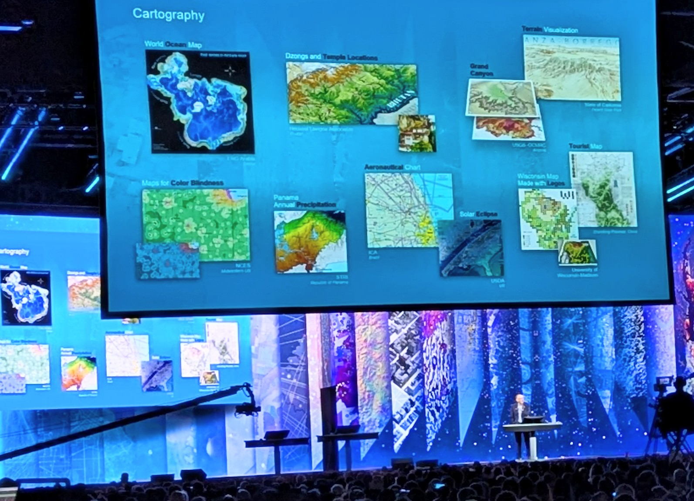
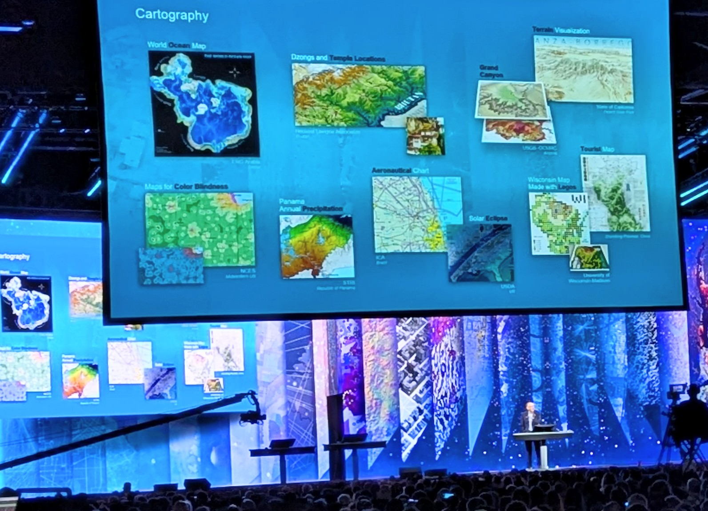
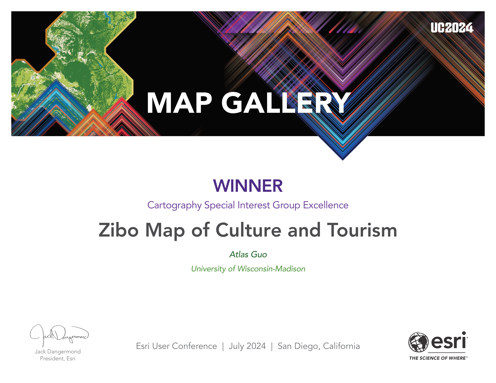
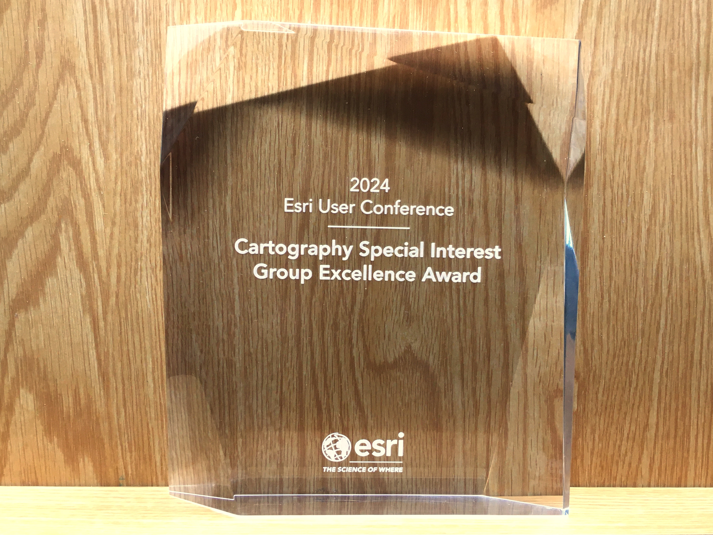
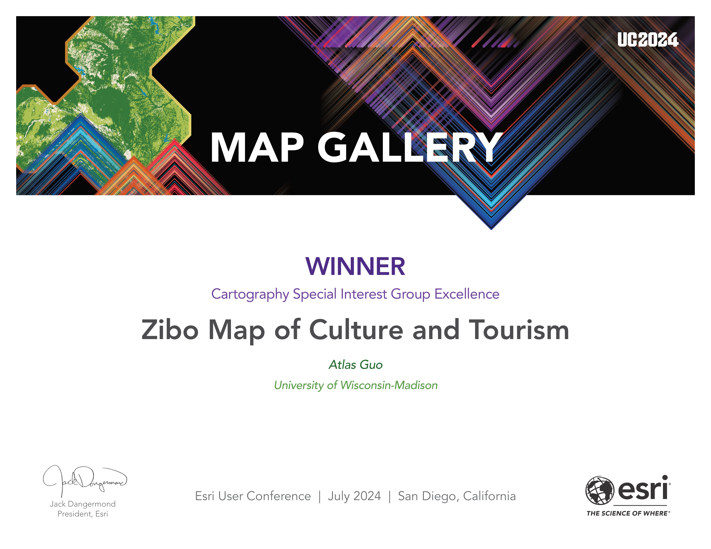
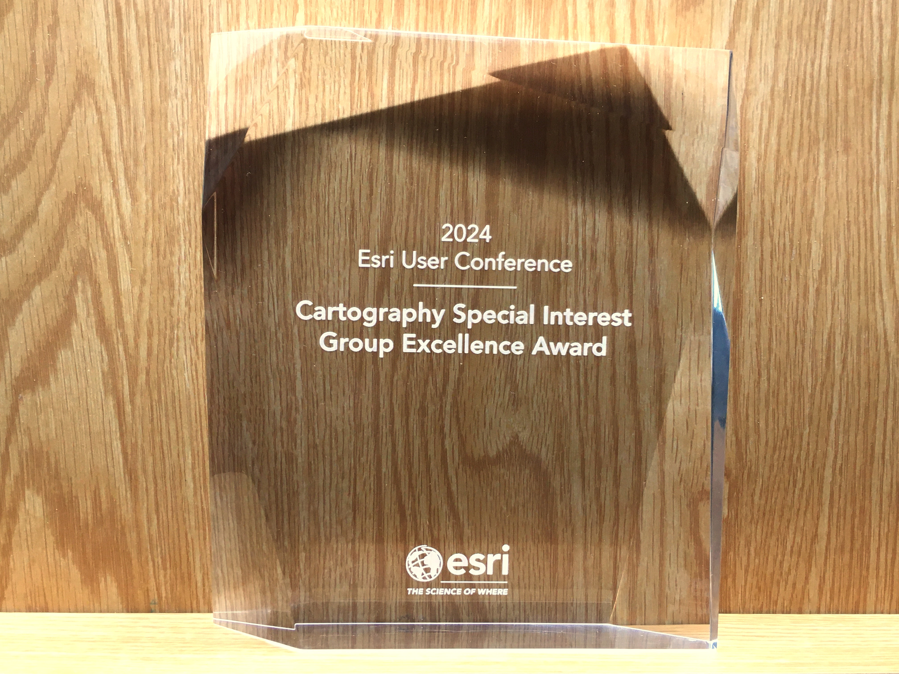

Zibo Map of Culture and Tourism
娣勫崥甯傛枃鏃呭湴鍥?
Best Cartographic Design in
2023 NACIS Map Competition;
Atlas of Design Vol.7; Esri Map Book Vol. 40; Esri
UC Plenary Session and Cartography
SIG Excellence
Award
鍖楃編鍦板浘淇℃伅鍗忎細2023鍦板浘绔炶禌鏈€浣冲湴鍥捐璁″锛屾槗鏅虹憺鐢ㄦ埛澶т細鍦板浘瀛︾壒鍒叴瓒ｇ粍鍗撹秺濂栦笌鍏ㄥ憳澶т細浼樼鍦板浘灞曠ず锛屽叆閫夊弻骞村垔銆婅璁″湴鍥鹃泦锛堢涓冨嵎锛夈€嬩笌鏄撴櫤鐟炪€婂湴鍥句箣涔︼紙绗?0鍗凤級銆?
濡傛灉鎮ㄦ槸浠庝腑鍥藉ぇ闄嗚闂湰缃戦〉锛屽姞杞介€熷害鍙兘杈冩參锛屾杩庣偣鍑讳笅鏂归摼鎺ヨ烦杞嚦鈥滃摂鍝╁摂鍝┾€濊棰戯紙1. 鍦板浘涓€瑙?/a>銆? 2. 濞佹柉搴锋槦澶у鍥句功棣?/a>銆? 3. 绾界害鏃朵唬骞垮満锛変互鍙婁腑鏂囧獟浣撶殑鐩稿叧鎶ラ亾锛?a href="https://news.lzcb.com/shares/tuwen.html?newsType=1&newsId=77158228910407680" target="_blank">椴佷腑鏅ㄦ姤銆? 娣勫崥鏃ユ姤/鏅氭姤锛堣浆杞借嚦鑵捐鏂伴椈锛夈€傚闇€鏌ョ湅鏈〉闈腑鐨勫浘鐗囷紝璇疯€愬績绛夊緟鍔犺浇鎴栭噸鏂版墦寮€鏈〉闈€?
 Download Compressed Image
Download Compressed Image涓嬭浇鍘嬬缉鍥剧墖
Download Full-Size Image
涓嬭浇楂樻竻鍥剧墖
The following English paragraphs are the original introduction published in The
Atlas
of
Design, Volume VII. It was subsequently translated into Chinese.
浠ヤ笅鑻辨枃娈佃惤涓哄垔鐧诲湪鍖楃編鍦板浘淇℃伅瀛︿細鍙屽勾鍒娿€婅璁″湴鍥鹃泦锛堢涓冨嵎锛夈€嬩笂鐨勫湴鍥句粙缁嶅師鏂囥€傞殢鍚庤缈昏瘧鎴愪腑鏂囷紝浠ヤ究涓枃璇昏€呴槄璇汇€?/i>
My homeland, the City of Zibo in China, became a nationwide hot spot in the spring of
2023 due to its distinctive barbecue cuisine and honest, simple folk customs. To
help promote tourism, I designed this map to introduce the history and culture of
this beautiful city, showcasing its natural features, tourist attractions, public
transportation, and some fun facts. The initial version was created in Chinese; in
subsequent revisions, some information was translated into English to serve
international
readers.
鎴戠殑瀹朵埂鈥斺€斾腑鍥界殑娣勫崥甯傦紝浜?023骞存槬澶╁洜鍏剁嫭鐗圭殑鐑х儰鏂囧寲鍜屾烦鏈寸湡璇氱殑姘戦鑰屾垚涓哄叏鍥界殑鐑偣銆備负浜嗗姪鍔涙梾娓告帹骞匡紝鎴戣璁′簡杩欏箙鍦板浘锛屼粙缁嶈繖搴х編涓藉煄甯傜殑鍘嗗彶涓庢枃鍖栵紝灞曠ず鍏惰嚜鐒剁壒寰併€佹梾娓告櫙鐐广€佸叕鍏变氦閫氱綉缁滃強涓€浜涙湁瓒ｇ殑缁嗚妭銆傚垵鐗堝湴鍥句互涓枃鍒朵綔锛屽悗缁増鏈腑灏嗛儴鍒嗕俊鎭炕璇戞垚鑻辨枃锛屼互渚块潪涓枃璇昏€呴槄璇汇€?br>
This map is a reference map enriching with cultural and tourism information. The
topographic base map combines hillshades and stratified colors, presenting the
natural landscape鈥檚 beauty. It clearly illustrates the topographic characteristics,
with higher elevation in the south and lower in the north, setting an elegant visual
tone for terrain representation, with Zibo's major peaks and some suburban hills
labeled.
杩欐槸涓€骞呯粨鍚堝ぇ閲忔枃鍖栦笌鏃呮父淇℃伅鐨勫弬鑰冨湴鍥俱€傚湴褰㈠簳鍥剧粨鍚堜簡灞变綋闃村奖娓叉煋鍜屽垎灞傝鑹诧紝灞曠幇鍑鸿嚜鐒舵櫙瑙傜殑缇庢劅銆傚湴鍥炬竻鏅板湴灞曠ず浜嗗湴褰㈢壒寰侊紝鍗楅珮鍖椾綆鐨勫湴鍔胯蛋鍚戜负鍦拌矊琛ㄧ幇濂犲畾浜嗕紭闆呯殑瑙嗚鍩鸿皟锛屽悓鏃朵篃鏍囨敞浜嗘穭鍗氫富瑕佺殑灞卞嘲鍙婁竴浜涢儕鍖虹殑灞变笜銆?br>
In terms of symbol design, important tourism and transportation information is
prioritized. This includes transportation hubs (railway stations, transit centers,
airport shuttle hubs, highway toll gates, and service areas), transportation lines
(high-speed railway and highway networks), and city bus "Barbecue Lines" and
"Tourism Lines" specially designed in metro transit style. The map categorizes
tourist attractions into different levels and types, such as museums, historic
sites, and other popular
spots.
鍦ㄧ鍙疯璁′笂锛屾湰鍥句紭鍏堢獊鍑洪噸瑕佺殑鏃呮父涓庝氦閫氫俊鎭紝鍖呮嫭浜ら€氭灑绾斤紙楂橀搧绔欍€佸杩愪腑蹇冦€佸煄甯傚€欐満妤笺€侀珮閫熷叕璺敹璐圭珯鍙婃湇鍔″尯锛夈€佷氦閫氱嚎璺紙楂橀搧鍙婇珮閫熷叕璺綉锛変互鍙婂煄甯傚叕浜ょ殑鈥滅儳鐑や笓绾库€濆拰鈥滄梾娓镐笓绾库€濓紝鍧囬噰鐢ㄥ湴閾佸浘鐨勯鏍艰繘琛岃璁°€傚湴鍥捐繕灏嗘梾娓告櫙鐐规寜鐓х骇鍒拰绫诲瀷杩涜浜嗗垎绫伙紝濡傚崥鐗╅銆佹枃鐗╀繚鎶ゅ崟浣嶅拰鍏朵粬鐑棬鏅偣銆?br>
This map includes two insets: The top right corner features a locator map of
Shandong Province, showing the administrative boundaries of prefecture-level cities
and essential physical geography. The bottom left corner shows a map of downtown
Zibo, marking the main roads, business districts, featured barbecue restaurants, and
a fun fact in local
toponymy.
鍦板浘鍖呭惈涓や釜鎻掑浘锛氬彸涓婅涓烘穭鍗氬競鍦ㄥ北涓滅渷鐨勪綅缃ず鎰忓浘锛屽睍绀轰簡鐪佸唴鍦扮骇甯傜殑琛屾斂鍖哄垝鍙婂熀鏈嚜鐒跺湴鐞嗕俊鎭紱宸︿笅瑙掍负娣勫崥甯傚煄鍖哄湴鍥撅紝鏍囨敞浜嗕富瑕侀亾璺€佸晢涓氬尯銆佺壒鑹茬儳鐑ゅ簵浠ュ強涓庡湴鍚嶇浉鍏崇殑瓒ｅ懗淇℃伅銆?br>
This map subtly integrates historical and cultural elements into its graphic design,
such as barbecue kebabs combined with the map scales, ancient knife-shape money and
a symbolic sculpture in railway station plaza as the north arrows, revealing Zibo鈥檚
rich history as the capital city of Qi State (1046 - 221 B.C.), one of the most
populated Chinese cities at that time. The design of the landmark Haidai Tower,
featuring 鈥淶hongshuge鈥? known as the most beautiful bookstore in China, is specially
showcased.
杩欏箙鍦板浘鍦ㄨ璁′腑宸у铻嶅叆浜嗗巻鍙插拰鏂囧寲鍏冪礌銆備緥濡傦紝灏嗙儳鐑や覆璁捐涓烘瘮渚嬪昂锛屽皢榻愬浗鍒€甯佸拰鐏溅绔欏寳骞垮満鐨勬爣蹇楁€р€滈綈鈥濆瓧闆曞璁捐涓烘寚鍖楅拡锛屼綋鐜颁簡娣勫崥浣滀负榻愬浗锛堝叕鍏冨墠1046骞磋嚦鍏厓鍓?21骞达級閮藉煄鐨勬繁鍘氬巻鍙插簳钑淬€傚綋鏃舵穭鍗氾紙涓存穭锛夋槸涓浗鏈€绻佸崕鐨勪腑蹇冨煄甯備箣涓€銆傚湴鍥捐繕鐗瑰埆灞曠ず浜嗘爣蹇楁€у缓绛戞捣宀辨ゼ浠ュ強鍏朵腑鐨勨€滈挓涔﹂榿鈥濓紝鍚庤€呰瑾変负涓浗鏈€缇庝功搴椼€?br>
As a native of Zibo, this map holds great significance to me. I literally cannot
make any other map with the same level of confidence, as it is tied to countless
personal memories. During the data collection process, I was so amazed by the rapid
and substantial development of my hometown in terms of infrastructure and
attractions. With deep love and passion, I respectfully present my map as a gift to
this lovely land,
Zibo.
浣滀负涓€鍚嶆穭鍗氫汉锛岃繖骞呭湴鍥惧鎴戣€岃█鎰忎箟闈炲嚒銆傛垜鍑犱箮鏃犳硶鐢ㄥ悓鏍风殑淇″績鍘诲埗浣滃叾浠栦换浣曚竴骞呭湴鍥撅紝鍥犱负瀹冧笌鎴戠殑涓汉璁板繂绱у瘑鐩歌繛銆傚湪鏀堕泦鏁版嵁鐨勮繃绋嬩腑锛屾垜娣卞埢鎰熷彈鍒板涔″湪鍩虹璁炬柦鍜屾梾娓告櫙鐐逛笂鐨勫揩閫熷彂灞曞拰宸ㄥぇ鍙樺寲銆傛€€鐫€娣辨繁鐨勭儹鐖卞拰婵€鎯咃紝鎴戞弧鎬€鏁剰鍦板皢杩欏箙鍦板浘鐚粰杩欑墖鍙埍鐨勫湡鍦扳€斺€旀穭鍗氥€?br>
See an example of represented terrain below.
涓嬪浘鏄湴褰㈣〃杈撅紙灞变綋闃村奖娓叉煋鍔犲垎灞傝鑹诧級鐨勫眬閮ㄦ牱渚嬨€?br>

Below is the inset map of Zibo Central Urban Area (Zhangdian District), with minor
revisions to generally work as an independent map as well.
涓嬪浘涓烘穭鍗氬競涓績鍩庡尯锛堝紶搴楀尯锛夌殑闄勫浘锛屽湪鍘熷浘鍩虹涓婃湁寰皬璋冩暣锛屼互渚垮崟鐙睍绀恒€?
 Download Compressed
Image
Download Compressed
Image涓嬭浇鍘嬬缉鍥剧墖锛堝紶搴楋級
Download Full-Size Image
涓嬭浇楂樻竻鍥剧墖锛堝紶搴楋級
Below is the inset map of Shandong Province, with minor
revisions to generally work as an independent map as
well.
涓嬪浘涓烘穭鍗氬競鍦ㄥ北涓滅渷鍐呬綅缃ず鎰忕殑闄勫浘锛屽湪鍘熷浘鍩虹涓婃湁寰皬璋冩暣锛屼互渚垮崟鐙睍绀恒€?/p>
 Download Compressed
Image
Download Compressed
Image
涓嬭浇鍘嬬缉鍥剧墖锛堝北涓滐級
Download Full-Size Image
涓嬭浇楂樻竻鍥剧墖锛堝北涓滐級
I presented this map during the 2023 annual conference of North American Cartographic
Information Society (NACIS), and won the Best
Cartographic Design Award (tie) in Student Map and Poster
Competition.
涓嬪浘涓烘湰鍦板浘锛堢涓€鐗堬級鍦?023骞村寳缇庡湴鍥句俊鎭崗浼氬勾浼氫笂灞曞嚭鏃剁殑鐓х墖銆傝鍥惧湪瀛︾敓鍦板浘娴锋姤姣旇禌涓崳鑾锋渶浣冲湴鍥惧璁捐濂栵紙骞跺垪绗竴锛屽閲?00缇庡厓锛夈€?

 This map is also selected into the Atlas
of Design, Volume VII, published by the North American Cartographic
Information
Society (NACIS).
This map is also selected into the Atlas
of Design, Volume VII, published by the North American Cartographic
Information
Society (NACIS).
鏈湴鍥句簬2024骞?鏈堣鏀跺叆鍖楃編鍦板浘淇℃伅鍗忎細鍙屽勾鍒娿€婅璁″湴鍥鹃泦锛堢涓冨嵎锛夈€嬶紝浠ヤ笅涓哄浼犲浘鍜屽疄浣撲功鐓х墖銆?


And as the Honorable Mention artwork in UW-Madison 15th Annual Digital Salon, the large printed version of this map is displayed at the College Library of UW-Madison. 鏈湴鍥句簬2024骞?鏈堣崳鑾峰▉鏂悍鏄熷ぇ瀛﹂害杩€婂垎鏍＄15灞婃暟瀛楁矙榫欐渶浣充綔鍝佽崳瑾夋彁鍚嶅锛堝嵆骞跺垪绗簩鍚嶏級锛屽苟鍦ㄥ鏍＄殑鈥滃ぇ瀛﹀浘涔﹂鈥濊繘琛屼负鏈熶竴骞寸殑灞曞嚭锛?024骞?鏈?2025骞?鏈堬級銆?

Zibo's barbecue became a phenomenal hot spot in China during the spring of 2023. To
better advertize
Zibo for the May Day (Labor Day Holiday) in 2024, my Zibo Map of Culture and Tourism
was
featured on two local public media platforms: Zibo Luzhong Morning Post (Dazhong News Group) 澶т紬鎶ヤ笟-椴佷腑鏅ㄦ姤,
and Zibo
Daily
Newspaper 娣勫崥鏃ユ姤绀?/a>, reprint by Tencent
News 鑵捐鏂伴椈. The WeChat Channel video clip by Zibo Daily Newspaper got
over 1000 "Like", 400 "Repost", and 600 "Favorite".
I made some short video clips introducing this Zibo map, and
posted on several social media
platforms (mostly on WeChat Video Channel), and got about 12K views so far. To
better promote the tourism, the featuring video is displayed on the giant screen at
Times Square at
NYC.
娣勫崥鐑х儰鍦?023骞存槬澶╂垚涓轰簡涓浗鐜拌薄绾х殑鐑偣銆備负浜嗘洿濂藉湴瀹ｄ紶娣勫崥銆佽繋鎺?024骞翠簲涓€鍔冲姩鑺傚亣鏈燂紝鎴戠殑銆婃穭鍗氬競鏂囨梾鍦板浘銆嬬殑浠嬬粛琚垔鐧诲湪涓や釜鏈湴澶т紬濯掍綋骞冲彴涓婏細澶т紬鎶ヤ笟闆嗗洟鏃椾笅鐨勩€婇瞾涓櫒鎶ャ€嬩互鍙娿€婃穭鍗氭棩鎶ャ€嬶紝骞惰鑵捐鏂伴椈杞浇銆傘€婃穭鍗氭棩鎶ャ€嬪埗浣滅殑寰俊瑙嗛鍙风煭瑙嗛鑾峰緱浜嗚秴杩?000娆♀€滅偣璧炩€濄€?00娆♀€滆浆鍙戔€濆拰600娆♀€滄敹钘忊€濄€傛垜杩樺埗浣滀簡涓€浜涘叾浠栫殑鐭棰戞潵浠嬬粛杩欏紶鍦板浘锛屽苟鍙戝竷鍦ㄥ涓ぞ浜ゅ獟浣撳钩鍙帮紙寰俊瑙嗛鍙枫€佸摂鍝╁摂鍝┿€佹姈闊崇瓑锛変笂锛岀洰鍓嶇疮璁℃挱鏀鹃噺瓒呰繃1.4涓囨銆備负浜嗘洿濂藉湴鎺ㄥ箍鏃呮父涓氾紝杩欐瀹ｄ紶瑙嗛杩樿鎶曠鑷崇航绾︽椂浠ｅ箍鍦虹殑宸ㄥ瀷灞忓箷涓婃挱鏀俱€?br>
During Esri User Conference in July 2024, this map was selected by Esri's President
Jack Dangermond to be featured during the Plenary Session.
鏈浘浜?024骞?鏈堝叆閫夋槗鏅虹憺鐢ㄦ埛澶т細鐨勫叏鍛樺ぇ浼氫富棰樻紨璁蹭腑鐨勪紭绉€鍦板浘灞曠ず锛堢敱鏄撴櫤鐟炲叕鍙稿垱濮嬩汉鍏兼€昏 Jack Dangermond
鏉板厠路涓规澃钂欏痉鍏堢敓浜茶嚜璇勫锛夈€傛槗鏅虹憺鍏徃锛圗sri锛夋槸鍏ㄧ悆鏈€澶х殑GIS浼佷笟鍜屽湴鐞嗕俊鎭湇鍔℃彁渚涘晢锛屽叾鐢ㄦ埛澶т細涔熸槸鍏ㄧ悆鏈€澶х殑GIS鐩涗細銆傛湰娆″ぇ浼氬湪鍔犲窞鐨勫湥鍦颁簹鍝ュ競涓捐锛屾潵鑷笘鐣屽悇鍦扮殑鐜板満鍙備細鑰呰秴杩?.1涓囦汉銆傚ぇ浼氱殑浜偣涔嬩竴鍗充负鍒涘浜哄吋鎬昏涓规澃钂欏痉鍏堢敓涓绘寔鐨勫叏鍛樺ぇ浼氫富棰樻紨璁层€?br>
 


 This map also won the Cartography Special Interest Group Excellent Award during
the
Esri User Conference 2024.
This map also won the Cartography Special Interest Group Excellent Award during
the
Esri User Conference 2024.
鏈浘鍦ㄨ娆℃槗鏅虹憺鐢ㄦ埛澶т細涓婂悓鏃惰幏寰椾簡鍦板浘瀛︿笓瀹跺叴瓒ｇ粍鍗撹秺濂栥€?br>
 



This map is also selected to be published on the next volume (Vol.40) of Esri Map
Book, in 2025.
鏈湴鍥捐鏀跺叆鏄撴櫤鐟炪€婂湴鍥句箣涔︼紙绗?0鍗凤級銆嬶紝骞跺皢浜?025骞村澶╂寮忓嚭鐗堬紝鏁鍏虫敞銆?

At the end of 2024, the Zhoucun Ancient Commercial Street was officially
designated as a national 5A-level tourist attraction, becoming Zibo's first 5A-level
scenic spot. This map has been updated accordingly, with the addition of an icon of
it.
2024骞村簳锛屾穭鍗氱殑鍛ㄦ潙鍙ゅ晢鍩庢寮忓叆閫夊浗瀹?绾ф櫙鍖猴紝鎴愪负娣勫崥鐨勯瀹?A绾ф櫙鍖恒€傛湰鍦板浘涔熻繘琛屼簡鐩稿簲鏇存柊锛屽苟澧炵粯鍛ㄦ潙澶ц鐨勫浘鏍囥€?/p>
If you have any suggestions towards this map(s), please share your feedback below. My
latest works and updates will be posted on the main social
media platforms. Thank you so much for your
support!
鑻ユ偍瀵规湰鍦板浘鐨勮璁℃垨鍐呭鏈変换浣曞缓璁紝娆㈣繋鍦ㄤ笅鏂圭暀瑷€鍖猴紙濮撳悕銆侀偖绠便€佸唴瀹癸級鎻愪氦鍙嶉锛屾湡寰呬笌鎮ㄨ繘涓€姝ヤ氦娴併€傛渶鏂颁綔鍝佷笌鍔ㄦ€佷細鍦ㄤ富瑕?a
href="../connect.html" target="_blank">绀句氦濯掍綋骞冲彴涓婃洿鏂帮紝闈炲父鎰熻阿鎮ㄧ殑鍏虫敞涓庢敮鎸侊紒